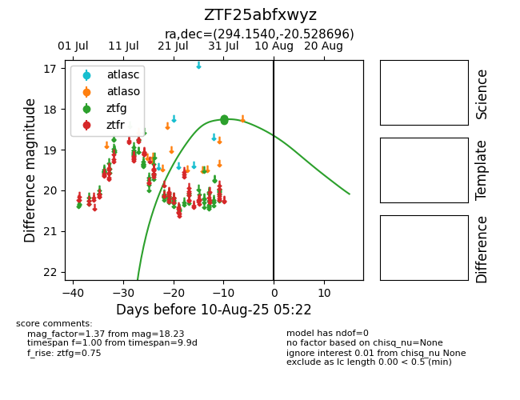

Target ZTF25abfxwyz at 2025-08-10 05:22, see:
FINK: fink-portal.org/ZTF25abfxwyz
Lasair: lasair-ztf.lsst.ac.uk/objects/ZTF25abfxwyz
ALeRCE: alerce.online/object/ZTF25abfxwyz
alt names
ZTF25abfxwyz (ztf,fink)
coordinates:
equatorial (ra, dec) = (294.1540,-20.52870)
galactic (l, b) = (18.9619,-18.85297)
photometry
last ztfg=18.23
5 ztfg detections
